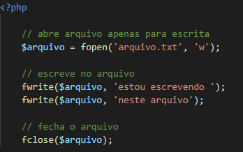

Arquivos podem substituir o banco de dados para o armazenamento de dados que não precisamos nos preocupar com questões de segurança. Criar um arquivo de logs para a aplicação ou relatórios de vendas para análise, por exemplo, podem ser tarefas corriqueiras. Por esse motivo várias linguagens possuem suporte para manipulação de arquivos, inclusive o PHP.
A função touch cria um arquivo vazio, basta passar como parâmetro o nome do arquivo a ser criado.
NOTA:
não existe uma forma de checar a extensão do arquivo. Se tivéssemos passado touch('arquivo.qualquer_extensao'), o arquivo teria sido criado da mesma forma.
Abre um arquivo. A função é utilizada com dois parâmetros: o primeiro passando o nome do arquivo a ser manipulado, e o segundo é o modo de manipulação, onde definimos as permissões de acesso para leitura ou escrita. Na documentação podemos encontrar todos os modos disponíveis.
Fonte: https://www.php.net/manual/pt_BR/function.fopen.php
NOTA:
muita atenção ao utilizar modos de escrita que indicam a inserção do ponteiro no começo do arquivo. Nesses casos, se o arquivo já existir ele será sobrescrito e seu conteúdo zerado!
Escreve no arquivo apontado aberto por fopen().
No exemplo acima, será criado o arquivo.txt no mesmo nível de diretório do nosso script, e seu conteúdo será “estou escrevendo neste arquivo” (sem as aspas).
Lê a linha do ponteiro atual
NOTA:
Neste exemplo, utilizamos a função feof() para testar o fim do arquivo.
Fecha o arquivo apontado (aberto por fopen()) anteriormente.
Serve para apagar um arquivo
Função checa se um arquivo existe. Também funciona para diretórios.